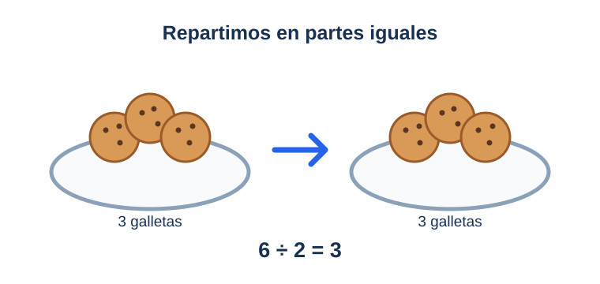
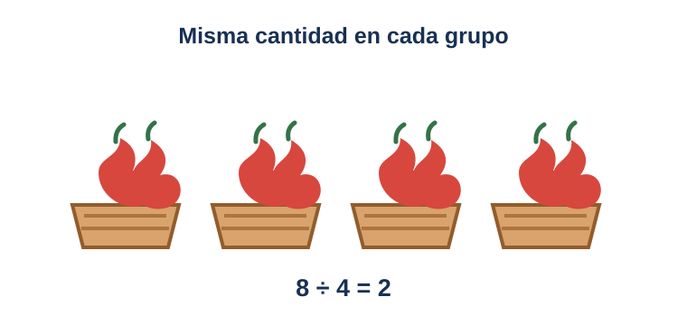

Repartir en partes iguales
Mira el video
¿No puedes ver el video? Lee la lectura: explica lo mismo con palabras. Ver el video en YouTube.
¡Dividir es repartir!
Imagina que tienes 6 galletas y 2 amigos. Quieres que cada amigo reciba lo mismo. Das una galleta a uno y una galleta al otro. Repites hasta que no queden galletas. Cada amigo recibe 3 galletas. Eso es repartir en partes iguales. Partes iguales quiere decir que todos reciben la misma cantidad. Nadie recibe más y nadie recibe menos. Para dividir usamos este signo: ÷. Lo escribimos así: 6 ÷ 2 = 3.
Observa cómo se reparten

La división con objetos
Mira el video
¿No puedes ver el video? Lee la lectura: explica lo mismo con palabras. Ver el video en YouTube.
Divide con lo que tengas a mano
Puedes dividir con manzanas, lápices o juguetes. Mira este ejemplo. Tienes 8 manzanas y 4 cestas. Pones 2 manzanas en cada cesta. No sobra ninguna manzana y todas las cestas tienen lo mismo. Lo escribimos así: 8 ÷ 4 = 2. El resultado nos dice cuántos hay en cada grupo. Tú también puedes hacerlo en casa. Haz grupos iguales con tus juguetes y cuenta cuántos hay en cada grupo.
Observa los grupos

Práctica
Mira el video
¿No puedes ver el video? Lee la lectura: explica lo mismo con palabras. Ver el video en YouTube.
Ahora te toca a ti
¡Ya sabes dividir! Ahora practica con 6 preguntas. Mira el dibujo, piensa cuántos hay en cada grupo y elige tu respuesta. Si aciertas 4 o más, ¡apruebas! Si te equivocas, no pasa nada. Verás la respuesta correcta y podrás intentarlo otra vez.
Repasa el reparto
Práctica: ¡demuestra lo que aprendiste!
Responde las 6 preguntas. Si aciertas 4 o más, ¡apruebas la lección!
¡Completaste el curso!
Viste todas las lecciones y aprobaste la práctica. ¡Ya sabes repartir en partes iguales! Cuando quieras, sal del curso y elige otro en Mi aprendizaje.
Salir del curso